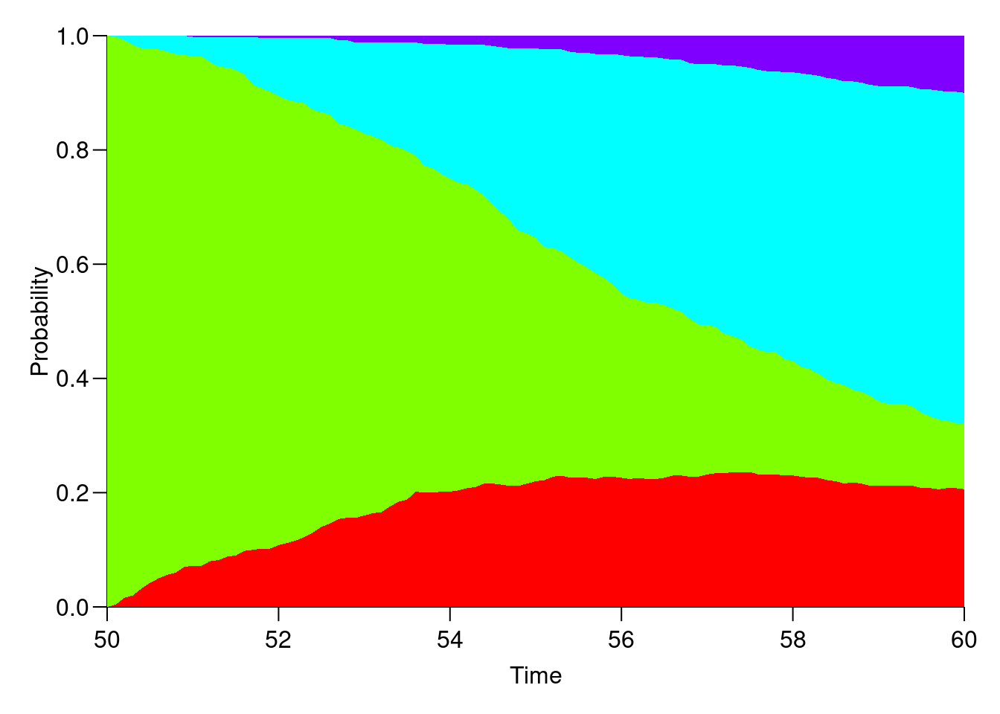
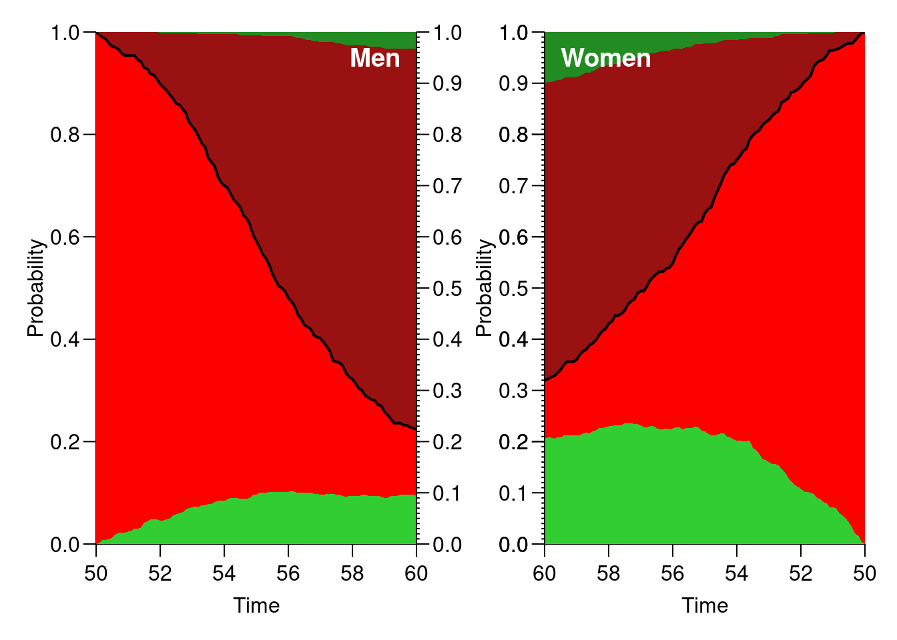

Chapter 15 Time-dependent variables and multiple states
The following practical exercise is based on the data from paper:
P Hovind, L Tarnow, P Rossing, B Carstensen, and HH Parving: Improved survival in patients obtaining remission of nephrotic range albuminuria in diabetic nephropathy. Kidney Int, 66(3):1180–1186, Sept 2004.
You can find a .pdf-version of the paper here:
http://BendixCarstensen.com/AdvCoh/papers/Hovind.2004.pdf
15.1 The renal failure dataset
The dataset renal.dta contains data on follow up of 125
patients from Steno Diabetes Center. They enter the study when they
are diagnosed with nephrotic range albuminuria (NRA). This is a
condition where the levels of albumin in the urine is exceeds a
certain level as a sign of kidney disease. The levels may however drop
as a consequence of treatment, this is called remission. Patients exit
the study at death or kidney failure (dialysis or transplant).
| Variable | Description |
|---|---|
id |
Patient id |
sex |
1=male, 2=female |
dob |
Date of birth |
doe |
Date of entry into the study (2.5 years after NRA) |
dor |
Date of remission. Missing if no remission has occurred |
dox |
Date of exit from study |
event |
Exit status: 1,2,3=event (death, ESRD), 0=censored |
The dataset is in Stata-format, so you must read the dataset using
read.dtafrom theforeignpackage (which is part of the standardR-distribution). At the same time, convertsexto a proper factor. Choose where to read the dataset.Loading required package: nlmeThis is mgcv 1.9-1. For overview type 'help("mgcv-package")'.Use the
Lexisfunction to declare the data as survival data with age, calendar time and time since entry into the study as timescales. Label any event \(>0\) as ESRD, i.e. renal death (death of kidney (transplant or dialysis), or person). Note that you must make sure that the alive state (hereNRA) is the first, asLexisassumes that everyone starts in this state (unless of courseentry.statusis specified):Lr <- Lexis(entry = list(per = doe, age = doe - dob, tfi = 0), exit = list(per = dox), exit.status = factor(event > 0, labels = c("NRA", "ESRD")), data = renal)NOTE: entry.status has been set to "NRA" for all.Classes 'Lexis' and 'data.frame': 125 obs. of 14 variables: $ per : num 1996 1990 1988 1995 1988 ... $ age : num 28.1 30.2 25.8 44.5 26.6 ... $ tfi : num 0 0 0 0 0 0 0 0 0 0 ... $ lex.dur: num 1.08 6.6 5.39 8.75 16.07 ... $ lex.Cst: Factor w/ 2 levels "NRA","ESRD": 1 1 1 1 1 1 1 1 1 1 ... $ lex.Xst: Factor w/ 2 levels "NRA","ESRD": 2 2 2 1 1 2 2 1 2 1 ... $ lex.id : int 1 2 3 4 5 6 7 8 9 10 ... $ id : num 17 26 27 33 42 46 47 55 62 64 ... $ sex : Factor w/ 2 levels "M","F": 1 2 2 1 2 2 1 1 2 1 ... $ dob : num 1968 1959 1962 1951 1961 ... $ doe : num 1996 1990 1988 1995 1988 ... $ dor : num NA 1990 NA 1996 1997 ... $ dox : num 1997 1996 1993 2004 2004 ... $ event : num 2 1 3 0 0 2 1 0 2 0 ... - attr(*, "time.scales")= chr [1:3] "per" "age" "tfi" - attr(*, "time.since")= chr [1:3] "" "" "" - attr(*, "breaks")=List of 3 ..$ per: NULL ..$ age: NULL ..$ tfi: NULLTransitions: To From NRA ESRD Records: Events: Risk time: Persons: NRA 48 77 125 77 1084.67 125Make sure you know what the variables in
Lrstand for.Visualize the follow-up in a Lexis-diagram, by using the
plotmethod forLexisobjects.lex.id per age tfi lex.dur lex.Cst lex.Xst id sex dob doe dor dox 88 1989.34 -38.81 0 3.5 NRA ESRD 586 M 2028.155 1989.343 NA 1992.839 event 1What is wrong here? List the data for the person with negative entry age.
Correct the data and make a new plot, for example by:
Lr <- transform(Lr, age = ifelse(dob > 2000, age + 100, age), dob = ifelse(dob > 2000, dob - 100, dob)) subset(Lr, id == 586)lex.id per age tfi lex.dur lex.Cst lex.Xst id sex dob doe dor dox 88 1989.34 61.19 0 3.5 NRA ESRD 586 M 1928.155 1989.343 NA 1992.839 event 1Now make a Cox-regression analysis of ESRD occurrence with the variables sex and age at entry into the study, using time since entry to the study as time scale.
Call: coxph(formula = Surv(lex.dur, lex.Xst == "ESRD") ~ I(age/10) + sex, data = Lr) n= 125, number of events= 77 coef exp(coef) se(coef) z Pr(>|z|) I(age/10) 0.5514 1.7357 0.1402 3.932 8.43e-05 sexF -0.1817 0.8338 0.2727 -0.666 0.505 exp(coef) exp(-coef) lower .95 upper .95 I(age/10) 1.7357 0.5761 1.3186 2.285 sexF 0.8338 1.1993 0.4886 1.423 Concordance= 0.612 (se = 0.036 ) Likelihood ratio test= 16.07 on 2 df, p=3e-04 Wald test = 16.38 on 2 df, p=3e-04 Score (logrank) test = 16.77 on 2 df, p=2e-04What is the hazard ratio between males and females? Between two persons who differ 10 years in age at entry?
The main focus of the paper was to assess whether the occurrence of remission (return to a lower level of albumin excretion, an indication of kidney recovery) influences mortality. Remission is a time-dependent variable which is initially 0, but takes the value 1 when remission occurs. In order to handle this, each person who sees a remission must have two records:
- One record for the time before remission, where entry is
doe, exit isdor, remission is 0, and event is 0. - One record for the time after remission, where entry is
dor, exit isdox, remission is 1, and event is 0 or 1 according to whether the person had an event atdox.
This is accomplished using the
cutLexisfunction on theLexisobject, where we introduce a remission stateRem. Also usesplit.state=TRUEto have different ESRD states according to whether a person had had remission or not prioer to ESRD. The statement to do this is:Lc <- cutLexis(Lr, cut = Lr$dor, # where to cut follow up timescale = "per", # what timescale are we referring to new.state = "Rem", # name of the new state split.state = TRUE) # different states depending on previous summary(Lc)Transitions: To From NRA Rem ESRD ESRD(Rem) Records: Events: Risk time: Persons: NRA 24 29 69 0 122 98 824.77 122 Rem 0 24 0 8 32 8 259.90 32 Sum 24 53 69 8 154 106 1084.67 125List the records from a few select persons (choose values for
lex.id, using for examplesubset(Lc, lex.id %in% c(5,7,9))).- One record for the time before remission, where entry is
Now show how the states are connected and the number of transitions between them by using
boxes. This is an interactive command that requires you to click in the graph window:It has a couple of fancy arguments, try:
You may even be tempted to read the help page for
boxes.Lexis…Plot a Lexis diagram where different coloring is used for different segments of the follow-up. The
plot.Lexisfunction draws a line for each record in the dataset, so you can index the coloring bylex.Cstandlex.Xstas appropriate — indexing by a factor corresponds to indexing by the index number of the factor levels, so you must be know which order the factor levels are in:[1] "NRA" "Rem" "ESRD" "ESRD(Rem)"par(mai = c(3, 3, 1, 1) / 4, mgp = c(3, 1, 0) / 1.6) plot(Lc, col = c("red", "limegreen")[Lc$lex.Cst], xlab = "Calendar time", ylab = "Age", lwd = 3, grid = 0:20 * 5, las = 1, xlim = c(1970, 2010), ylim = c(20, 70), xaxs = "i", yaxs = "i") points(Lc, pch = c(NA, NA, 16, 16)[Lc$lex.Xst], col = c("red", "limegreen", "transparent", "transparent")[Lc$lex.Cst]) points(Lc, pch = c(NA, NA, 1, 1)[Lc$lex.Xst], col = "black", lwd = 2)Make a Cox-regression of mortality rates (i.e. endpoint
ESRDorESRD(Rem)) with sex, age at entry and remission as explanatory variables, using time since entry as timescale, and includelex.Cstas time-dependent variable, and indicate that each record represents follow-up fromtfitotfi+lex.dur. Make sure that you know why what goes where here in the call tocoxph.[1] "ESRD" "ESRD(Rem)"m1 <- coxph(Surv(tfi, # entry time tfi + lex.dur, # exit time lex.Xst %in% EP) # event ~ sex + I((doe - dob - 50) / 10) + # fixed covariates (lex.Cst == "Rem"), # time-dependent variable data = Lc) summary(m1)Call: coxph(formula = Surv(tfi, tfi + lex.dur, lex.Xst %in% EP) ~ sex + I((doe - dob - 50)/10) + (lex.Cst == "Rem"), data = Lc) n= 154, number of events= 77 coef exp(coef) se(coef) z Pr(>|z|) sexF -0.05534 0.94616 0.27500 -0.201 0.840517 I((doe - dob - 50)/10) 0.52190 1.68522 0.13655 3.822 0.000132 lex.Cst == "Rem"TRUE -1.26241 0.28297 0.38483 -3.280 0.001036 exp(coef) exp(-coef) lower .95 upper .95 sexF 0.9462 1.0569 0.5519 1.6220 I((doe - dob - 50)/10) 1.6852 0.5934 1.2895 2.2024 lex.Cst == "Rem"TRUE 0.2830 3.5339 0.1331 0.6016 Concordance= 0.664 (se = 0.033 ) Likelihood ratio test= 30.31 on 3 df, p=1e-06 Wald test = 27.07 on 3 df, p=6e-06 Score (logrank) test = 29.41 on 3 df, p=2e-06What is the effect of of remission on the rate of ESRD?
Splitting the follow-up time
In order to explore the effect of remission on the rate of ESRD, we split the data further into small pieces of follow-up. To this end we use the function
splitLexis. The rates can then be modeled using a Poisson-model, and the shape of the effect of the underlying rates be explored. Furthermore, we can allow effects of both time since NRA and current age. To this end we will use splines, so we need thesplinesand also themgcvpackages.Now split the follow-up time every month after entry, and verify that the number of events and risk time is the same as before and after the split:
Transitions: To From NRA Rem ESRD ESRD(Rem) Records: Events: Risk time: Persons: NRA 24 29 69 0 122 98 824.77 122 Rem 0 24 0 8 32 8 259.90 32 Sum 24 53 69 8 154 106 1084.67 125Transitions: To From NRA Rem ESRD ESRD(Rem) Records: Events: Risk time: Persons: NRA 9854 29 69 0 9952 98 824.77 122 Rem 0 3139 0 8 3147 8 259.90 32 Sum 9854 3168 69 8 13099 106 1084.67 125Now fit the Poisson-model corresponding to the Cox-model we fitted previously. The function
Ns()produces a model matrix corresponding to a piece-wise cubic function, modeling the baseline hazard explicitly (think of theNsterms as the baseline hazard that is not visible in the Cox-model). You can use the wrapper functionglm.Lexismp <- glm.Lexis(sLc, ~ Ns(tfi, knots = c(0, 2, 5, 10)) + sex + I((doe - dob - 40) / 10) + I(lex.Cst == "Rem"))stats::glm Poisson analysis of Lexis object sLc with log link: Rates for transitions: NRA->ESRD Rem->ESRD(Rem)exp(Est.) 2.5% 97.5% (Intercept) 0.01664432 0.003956666 0.07001685 Ns(tfi, knots = c(0, 2, 5, 10))1 5.18917655 1.949197027 13.81469029 Ns(tfi, knots = c(0, 2, 5, 10))2 34.20004199 1.764818735 662.75524463 Ns(tfi, knots = c(0, 2, 5, 10))3 4.43318269 2.179977108 9.01528219 sexF 0.91751162 0.536258443 1.56981691 I((doe - dob - 40)/10) 1.70082390 1.300813859 2.22384004 I(lex.Cst == "Rem")TRUE 0.27927558 0.131396852 0.59358233How does the effects of sex change from the Cox-model?
Try instead using the
gamfunction from themgcvpackage. There is convenience wrapper for this forLexisobjects as well:mgcv::gam Poisson analysis of Lexis object sLc with log link: Rates for transitions: NRA->ESRD Rem->ESRD(Rem)exp(Est.) 2.5% 97.5% I(lex.Cst == "Rem")TRUE 0.2792756 0.1313969 0.5935823 I((doe - dob - 40)/10) 1.7008239 1.3008139 2.2238400 sexF 0.9175116 0.5362584 1.5698169exp(Est.) 2.5% 97.5% I(lex.Cst == "Rem")TRUE 0.2784659 0.1309446 0.5921838 I((doe - dob - 40)/10) 1.6992069 1.2995225 2.2218192 sexF 0.9309945 0.5435486 1.5946150We see that there is virtually no difference between the two approaches in terms of the regression parameters.
Extract the regression parameters from the models using
ci.expand compare with the estimates from the Cox-model:exp(Est.) 2.5% 97.5% P sexF 0.9309945 0.5435486 1.5946150 0.7945394004 I((doe - dob - 40)/10) 1.6992069 1.2995225 2.2218192 0.0001066910 I(lex.Cst == "Rem")TRUE 0.2784659 0.1309446 0.5921838 0.0008970863exp(Est.) 2.5% 97.5% sexF 0.9461646 0.5519334 1.621985 I((doe - dob - 50)/10) 1.6852196 1.2895097 2.202360 lex.Cst == "Rem"TRUE 0.2829710 0.1330996 0.601599exp(Est.) 2.5% 97.5% sexF 0.97 0.97 0.97 I((doe - dob - 40)/10) 1.01 1.01 1.01 I(lex.Cst == "Rem")TRUE 0.99 0.99 0.99How large are the differences in estimated regression parameters?
The model has the same assumptions as the Cox-model about proportionality of rates, but there is an additional assumption that the hazard is a smooth function of time since entry. It seems to be a sensible assumption (well, restriction) to put on the rates that they vary smoothly by time. No such restriction is made in the Cox model. The
gammodel optimizes the shape of the smoother by general cross-validation. Try to look at the shape of the estimated effect oftfi:Is this a useful plot?
However,
plot(well,plot.gam) does not give you the absolute level of the underlying rates because it bypasses the intercept. So in order to predict the rates as a function oftfiand the covariates, we set up a prediction data frame. Note that age in the model specification is entered asdoe-dob, hence the prediction data frame must have these two variables and not the age, but it is only the difference that matters for the prediction:'data.frame': 201 obs. of 5 variables: $ tfi : num 0 0.1 0.2 0.3 0.4 0.5 0.6 0.7 0.8 0.9 ... $ sex : chr "M" "M" "M" "M" ... $ doe : num 1990 1990 1990 1990 1990 1990 1990 1990 1990 1990 ... $ dob : num 1940 1940 1940 1940 1940 1940 1940 1940 1940 1940 ... $ lex.Cst: chr "NRA" "NRA" "NRA" "NRA" ...matshade(nd$tfi, cbind(ci.pred(mp, newdata = nd), ci.pred(mx, newdata = nd)) * 100, plot = TRUE, type = "l", lwd = 3:4, col = c("black", "forestgreen"), log = "y", xlab = "Time since entry (years)", ylab = "ESRD rate (per 100 PY) for 50 year old men")Try to overlay with the corresponding prediction from the
glmmodel usingNs.
## Prediction from the multistate model
If we want to make proper statements about the survival and disease
probabilities we must know not only how the occurrence of remission
influences the rate of death/ESRD, but we must also model the
occurrence rate of remission itself.The rates of ESRD were modelled by a Poisson model with effects of age and time since NRA — in the models
mpandmx. But if we want to model whole process we must also model the remission rates transition fromNRAtoRem, but the number of events is rather small so we restrict covariates in this model to only time since NRA and sex. Note that only the records that represent follow-up in theNRAstate should be used; this is most easily done using thegam.Lexisfunctionmgcv::gam Poisson analysis of Lexis object sLc with log link: Rates for the transition: NRA->RemFamily: poisson Link function: log Formula: cbind(trt(Lx$lex.Cst, Lx$lex.Xst) %in% trnam, Lx$lex.dur) ~ s(tfi, k = 10) + sex Parametric coefficients: Estimate Std. Error z value Pr(>|z|) (Intercept) -3.7025 0.2582 -14.339 <2e-16 sexF 0.9579 0.3728 2.569 0.0102 Approximate significance of smooth terms: edf Ref.df Chi.sq p-value s(tfi) 1.013 1.025 0.066 0.813 R-sq.(adj) = -5.65e-06 Deviance explained = 1.65% UBRE = -0.96024 Scale est. = 1 n = 9952exp(Est.) 2.5% 97.5% P (Intercept) 0.02466174 0.01486718 0.04090901 1.254019e-46 sexF 2.60620470 1.25503844 5.41202779 1.019130e-02 s(tfi).1 1.00499489 0.89131271 1.13317662 9.351638e-01 s(tfi).2 0.99623769 0.80778743 1.22865188 9.718940e-01 s(tfi).3 0.99822247 0.91911268 1.08414140 9.663137e-01 s(tfi).4 1.00188999 0.89006998 1.12775801 9.750528e-01 s(tfi).5 0.99842904 0.92280785 1.08024715 9.687920e-01 s(tfi).6 0.99817367 0.90142303 1.10530865 9.719666e-01 s(tfi).7 1.00168704 0.92615949 1.08337380 9.663850e-01 s(tfi).8 0.99448155 0.68445450 1.44493689 9.768400e-01 s(tfi).9 0.94790052 0.63349476 1.41834700 7.946918e-01What is the remission rate-ratio between men and women?
If we want to predict the probability of being in each of the three states using these estimated rates, we may resort to analytical calculations of the probabilities from the estimated rates, which is actually doable in this case, but which will be largely intractable for more complicated models. Alternatively we can simulate the life course for a large group of (identical) individuals through a model using the estimated rates. That will give a simulated cohort (in the form of a
Lexisobject), and we can then just count the number of persons in each state at each of a set of time points. This is accomplished using the functionsimLexis. The input to this is the initial status of the persons whose life-course we shall simulate, and the transition rates in suitable form:- Suppose we want predictions for men aged 50 at
NRA. The input is in the form of a
Lexisobject (wherelex.durandlex.Xstwill be ignored). Note that in order to carry over thetime.scalesand thetime.sinceattributes, we construct the input object usingsubsetto select columns, andNULLto select rows (see the example in the help file forsimLexis):
Classes 'Lexis' and 'data.frame': 0 obs. of 11 variables: $ lex.id : int $ per : num $ age : num $ tfi : num $ lex.dur: num $ lex.Cst: Factor w/ 4 levels "NRA","Rem","ESRD",..: $ lex.Xst: Factor w/ 4 levels "NRA","Rem","ESRD",..: $ id : num $ sex : Factor w/ 2 levels "M","F": $ dob : num $ doe : num - attr(*, "time.scales")= chr [1:3] "per" "age" "tfi" - attr(*, "time.since")= chr [1:3] "" "" "" - attr(*, "breaks")=List of 3 ..$ per: NULL ..$ age: NULL ..$ tfi: num [1:361] 0 0.0833 0.1667 0.25 0.3333 ...[1] "per" "age" "tfi"inL[1, "lex.id"] <- 1 inL[1, "per"] <- 2000 inL[1, "age"] <- 50 inL[1, "tfi"] <- 0 inL[1, "lex.Cst"] <- "NRA" inL[1, "lex.Xst"] <- NA inL[1, "lex.dur"] <- NA inL[1, "sex"] <- "M" inL[1, "doe"] <- 2000 inL[1, "dob"] <- 1950 inL <- rbind(inL, inL) inL[2, "sex"] <- "F" inLlex.id per age tfi lex.dur lex.Cst lex.Xst id sex dob doe 1 2000 50 0 NA NRA <NA> NA M 1950 2000 1 2000 50 0 NA NRA <NA> NA F 1950 2000Classes 'Lexis' and 'data.frame': 2 obs. of 11 variables: $ lex.id : num 1 1 $ per : num 2000 2000 $ age : num 50 50 $ tfi : num 0 0 $ lex.dur: num NA NA $ lex.Cst: Factor w/ 4 levels "NRA","Rem","ESRD",..: 1 1 $ lex.Xst: Factor w/ 4 levels "NRA","Rem","ESRD",..: NA NA $ id : num NA NA $ sex : Factor w/ 2 levels "M","F": 1 2 $ dob : num 1950 1950 $ doe : num 2000 2000 - attr(*, "breaks")=List of 3 ..$ per: NULL ..$ age: NULL ..$ tfi: num [1:361] 0 0.0833 0.1667 0.25 0.3333 ... - attr(*, "time.scales")= chr [1:3] "per" "age" "tfi" - attr(*, "time.since")= chr [1:3] "" "" ""The other input for the simulation is the models for the transitions. This is given as a list with an element for each transient state (that is
NRAandRem), each of which is again a list with names equal to the states that can be reached from the transient state. The content of the list will beglmobjects, in this case the models we just fitted, describing the transition rates:With this as input we can now generate a cohort, using
N=5to simulate life course of 10 persons (5 for each set of starting values ininL):lex.id per age tfi lex.dur lex.Cst lex.Xst id sex dob doe cens 1 2000.00 50.00 0.00 6.72 NRA ESRD NA M 1950 2000 2020 2 2000.00 50.00 0.00 6.08 NRA ESRD NA M 1950 2000 2020 3 2000.00 50.00 0.00 7.16 NRA ESRD NA M 1950 2000 2020 4 2000.00 50.00 0.00 5.39 NRA ESRD NA M 1950 2000 2020 5 2000.00 50.00 0.00 2.14 NRA ESRD NA M 1950 2000 2020 6 2000.00 50.00 0.00 3.22 NRA ESRD NA M 1950 2000 2020 7 2000.00 50.00 0.00 1.42 NRA ESRD NA M 1950 2000 2020 8 2000.00 50.00 0.00 1.35 NRA Rem NA M 1950 2000 2020 8 2001.35 51.35 1.35 18.65 Rem Rem NA M 1950 2000 2020 9 2000.00 50.00 0.00 7.23 NRA ESRD NA M 1950 2000 2020 10 2000.00 50.00 0.00 2.18 NRA ESRD NA M 1950 2000 2020 11 2000.00 50.00 0.00 7.03 NRA ESRD NA F 1950 2000 2020 12 2000.00 50.00 0.00 4.12 NRA Rem NA F 1950 2000 2020 12 2004.12 54.12 4.12 13.26 Rem ESRD(Rem) NA F 1950 2000 2020 13 2000.00 50.00 0.00 8.36 NRA Rem NA F 1950 2000 2020 13 2008.36 58.36 8.36 11.64 Rem Rem NA F 1950 2000 2020 14 2000.00 50.00 0.00 6.00 NRA ESRD NA F 1950 2000 2020 15 2000.00 50.00 0.00 4.65 NRA Rem NA F 1950 2000 2020 15 2004.65 54.65 4.65 8.53 Rem ESRD(Rem) NA F 1950 2000 2020 16 2000.00 50.00 0.00 7.02 NRA ESRD NA F 1950 2000 2020 17 2000.00 50.00 0.00 8.83 NRA Rem NA F 1950 2000 2020 17 2008.83 58.83 8.83 11.17 Rem Rem NA F 1950 2000 2020 18 2000.00 50.00 0.00 6.54 NRA ESRD NA F 1950 2000 2020 19 2000.00 50.00 0.00 4.44 NRA ESRD NA F 1950 2000 2020 20 2000.00 50.00 0.00 4.83 NRA ESRD NA F 1950 2000 2020$M Transitions: To From NRA Rem ESRD ESRD(Rem) Records: Events: Risk time: Persons: NRA 0 1 9 0 10 10 42.88 10 Rem 0 1 0 0 1 0 18.65 1 Sum 0 2 9 0 11 10 61.53 10 $F Transitions: To From NRA Rem ESRD ESRD(Rem) Records: Events: Risk time: Persons: NRA 0 4 6 0 10 10 61.83 10 Rem 0 2 0 2 4 2 44.60 4 Sum 0 6 6 2 14 12 106.43 10What type of object have you got as
iL?- Suppose we want predictions for men aged 50 at
NRA. The input is in the form of a
Now generate the life course of, say, 5,000 persons, and look at the summary. The
system.timecommand is just to tell you how long it took, you may want to start with 500 just to see how long that takes.user system elapsed 2.731 3.278 2.085$M Transitions: To From NRA Rem ESRD ESRD(Rem) Records: Events: Risk time: Persons: NRA 29 77 394 0 500 471 2703.34 500 Rem 0 47 0 30 77 30 466.36 77 Sum 29 124 394 30 577 501 3169.70 500 $F Transitions: To From NRA Rem ESRD ESRD(Rem) Records: Events: Risk time: Persons: NRA 23 167 310 0 500 477 2262.17 500 Rem 0 110 0 57 167 57 1207.88 167 Sum 23 277 310 57 667 534 3470.05 500Why are there so many ESRD-events in the resulting data set?
Now count how many persons are present in each state at each time for the first 10 years after entry (which is at age 50). This can be done by using
nState. Try:nStm <- nState(subset(sM, sex == "M"), time.scale = "age", at = seq(0, 10, 0.1), from = 50) nStf <- nState(subset(sM, sex == "F"), time.scale = "age", at = seq(0, 10, 0.1), from = 50) head(nStf, 15)State when NRA Rem ESRD ESRD(Rem) 50 500 0 0 0 50.1 496 2 2 0 50.2 491 7 2 0 50.3 484 10 6 0 50.4 476 17 7 0 50.5 474 17 9 0 50.6 465 24 11 0 50.7 463 25 12 0 50.8 455 30 15 0 50.9 448 32 20 0 51 443 35 22 0 51.1 435 41 24 0 51.2 430 44 26 0 51.3 427 44 29 0 51.4 421 47 32 0What is in the object
nStf?With the counts of persons in each state at the designated time points (in
nStm), compute the cumulative fraction over the states, arranged in order given byperm:State when Rem NRA ESRD ESRD(Rem) 50 0.000 1.000 1 1 50.1 0.004 0.996 1 1 50.2 0.014 0.996 1 1 50.3 0.020 0.988 1 1 50.4 0.034 0.986 1 1 50.5 0.034 0.982 1 1State when Rem NRA ESRD ESRD(Rem) 59.5 0.236 0.330 0.912 1 59.6 0.236 0.330 0.912 1 59.7 0.234 0.324 0.910 1 59.8 0.234 0.322 0.910 1 59.9 0.236 0.320 0.908 1 60 0.234 0.314 0.904 1What do the entries in
ppfrepresent?Try to plot the cumulative probabilities using the
plotmethod forpStateobjects:
Is this useful?
Now try to improve the plot so that it is easier to read, and easier to compare between men and women, for example:
par(mfrow = c(1, 2)) # Men plot(ppm, col = c("limegreen", "red", "#991111", "forestgreen")) lines(as.numeric(rownames(ppm)), ppm[, "NRA"], lwd = 2) text(59.5, 0.95, "Men", adj = 1, col = "white", font = 2, cex = 1.2) axis(side = 4, at = 0:10 / 10) axis(side = 4, at = 1:99 / 100, labels = NA, tck = -0.01) # Women plot(ppf, col = c("limegreen", "red", "#991111", "forestgreen"), xlim = c(60, 50)) # inverted x-axis lines(as.numeric(rownames(ppf)), ppf[, "NRA"], lwd = 2) text(59.5, 0.95, "Women", adj = 0, col = "white", font = 2, cex = 1.2) axis(side = 2, at = 0:10 / 10) axis(side = 2, at = 1:99 / 100, labels = NA, tck = -0.01)
What is the 10-year risk of remission for men and women respectively?